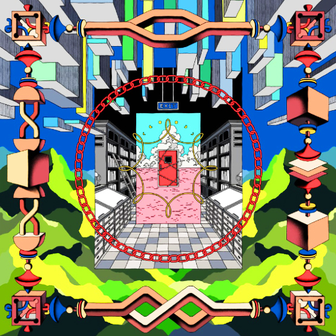
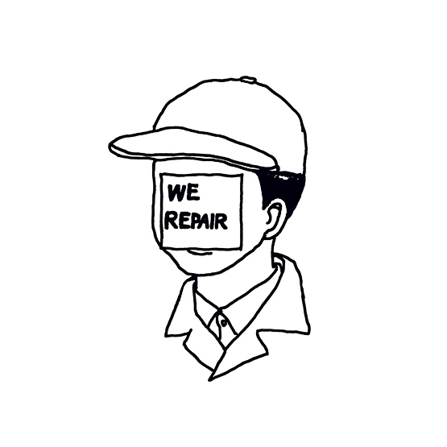

Our
Manifesto
프라이탁 선언문은 우리 시대의 의식적이고 의미 있는 소비에 대한 호소로 탄생했습니다. 그것은 우리가 생각하고 행동하고, 협업하고, 제품을 개발하고, 생산하고, 유통하고, 포장하고, 판매하고, 그리고 그리고 그리고 그리고 그리고 그리고 그리고 그리고 그리고 그리고, 생각하고 행동하는 방식에 대한 지침입니다. 이 네가지의 선언문은 근본적으로 간단합니다. 그리고 우리가 그것들을 완전히 성취할 수는 없다 할지라도, 우리는 그것들을 협소하게 놓치는 것을 포기하지 않을 것입니다.
이 선언문은 로잔의 디자인 박물관 무닥에서 리클린 쌍둥이와 함께 프라이탁 형제의 전시회를 계기로 만들어졌습니다. 우리는 예술가나 디자이너 각각 여성 4명에게 ‘자원 순환 원칙’의 4가지 요점과 이에 대한 매우 개인적인 견해를 설명하도록 요청하기로 결정했습니다.
-

#1_We Keep Stuff In Closed Cycles
우리는 자연의 사이클의 중요성을 알고 있으며 그 흐름에 맞춰 소비합니다. 우리는 자원이 지속 가능하게 생산되고 재활용과 생분해가 가능한 것을 사용하며 폐쇄된 기술 재료 주기로 관리되고 재생 가능 에너지로 구동되는 자원만을 소비합니다.
-
#2_We Lose Speed To Win Time
더 많은 시간을 절약할수록 더 적은 시간을 갖게 됩니다. 시간을 들이지 않으면 절대 가질 수 없습니다. 슬로 푸드와 슬로 패션은 즐거움과 웰빙을 증가시키는 자원의 보다 의식적인 사용의 두 가지 예일 뿐입니다.
-

#3_We Repair
우리는 유지 보수가 쉬운 제품을 선택합니다. 그것들은 아름답게 에이징되는 재료로 만들어졌으며 사용할수록 더 멋지고 매력적입니다. 일상적인 마모나 수리로 인한 흔적은 사용한 흔적을 보여주며 더욱 개성 있고 독특합니다.
-
>
#4_We Prefer Access Over Ownership
서비스로 대체할 수 없는 상품이 있습니다. 그러나 제품에 대한 액세스는 제품을 소유하고 유지하는 것보다 더 중요합니다.